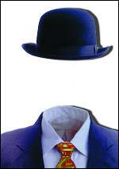

Nuestro lector Dan Bennett desde Brentwood, Tennessee, tiene comentarios pertinentes sobre un artículo que apareció la semana pasada y sobre el cual muchos de ustedes han comentado. Repito aquí mi respeto por la Union de Libertades Civiles Americanas (ACLU son sus siglas en inglés), pero admito que Dan tiene varios buenos puntos que comentar:
El problema que tengo con la intervención de los del ACLU en la tontería del pueblito de Inglis, Florida, es que literalmente están convirtiendo en un caso federal algo que en sí mismo es completamente insignificante. Estirar tanto la prohibición Constitucional que dice que “el congreso no debe producir ninguna ley respecto a un establecimiento religioso” para silenciar cualquier expresión religiosa es un síntoma de la moda que vemos en el presente en donde las leyes dicen lo que queremos que digan en vez de lo que realmente expresan.
El síndico de Inglis no es el Congreso y, por lo que yo sé, ella no está creando ninguna ley con respecto a un establecimiento religioso y, no existe, según mis conocimientos, ningún estatuto federal que les prohiba a los gobiernos locales hacer cosas ridículas (si no fuera así en la prisión federal sólo cabrían prisioneros de pie). Por derecho, a la ACLU la podrían sacar del tribunal, a fuerza de carcajadas, por llevar esta acusación a la justicia. Pero no es lo que ocurrirá y encuentro esto más que un poco inquietante.
Si el significado de la Constitución se ha convertido en algo tan subjetivo y elástico entonces el resultado final es que el sistema judiciario tendrá que gobernar por decretos. Siempre ha habido una cantidad significativa de estas situaciones y así continuará mientras los jueces tengan cualquier tipo de permiso para interpretar la ley como se les antoje pero, la moda ahora parece ser que lo mejor es crear “leyes” y luego racionalizarlas, torciendo la ley actual a tal punto, que quede irreconocible. El fin lógico de este curso de eventos es el despotismo. Lo que no es una mala cosa mientras el despotismo sea benévolo pero, nunca permanece benévolo por largo tiempo. La Constitución fue escrita desde un punto de vista bastante Calvinista. Los que la formularon asumieron que si a alguien le era dada la oportunidad de abusar del poder lo haría, por lo tanto, hicieron todo lo posible para evitar que alguien tuviera demasiado poder con el que abusar. En estos tiempos postcristianos, nos hemos quedado con la idea de la desconfianza inherente que existe en la humanidad en general y, ahora nos sentimos cómodos, al otorgarle poderes a nuestros líderes, que hubieran horrorizado a las generaciones anteriores. Me parece que muy pronto nos arrepentiremos de ésto.
Gracias, Dan. Esencialmente, estoy de acuerdo. Lo que parece es que ACLU observó una grieta en la seguridad que generalmente obtenemos de la ley “el Congreso no hará leyes repecto a establecimientos religiosos”, y pues se alarmaron. Pero, mientras “en Dios confiamos” continúe apareciendo en nuestra moneda federal, a pesar de los millones de estadounidenses quienes carecen de tal creencia y confianza, creo que la preocupación de la ACLU puede ser mejor dirigida a otros asuntos de mayor importancia, en vez de dirigirlo a una oficial electa, tonta y sin importancia, que probablemente tiembla con tan solo pensar en Harry Potter presentándose en la biblioteca del colegio….
Esto lo recogimos del internet, el autor es desconocido. Se lee tan bien como cualquier lectura incoherente de horóscopo publicada para el consumidor ansioso que necesita la seguridad de que están bien representados en el plan cósmico…
¿Por qué cruza la gallina la calle? Según el zodíaco…
¿Dónde está mi astrólogo? ¿Cruzar o no cruzar? ¿Y por qué?
Aries (marzo 21 hasta abril 19): las gallinas nacidas bajo el signo de Aries son líderes naturales que poseen un espíritu pionero y determinado y desean dejar su marca en el mundo. Ellas cruzan la calle para imponerse y buscar acción, retos y aventuras.
Tauro (abril 20 a mayo 20): las gallinas tauro tienen una voluntad de acero y una actitud humilde y práctica hacia la vida. Están muy interesadas en las cosas materiales del mundo y tienen una necesidad real de sentirse seguras. Se sienten nerviosas a menos que estén cómodas. Ellas cruzarán la calle sólo si hay más seguridad del otro lado o para obtener posesiones materiales.
Géminis (mayo 21 a junio 20): estas gallinas son altamente inquietas y siempre andan buscando una variedad de experiencias distintas. Ellas cruzan porque no saben lo que hay del otro lado y quieren evitar el aburrimiento de sus existencias cotidianas.
Cáncer (junio 21 a julio 22): a pesar de que poseen un caparazón duro en el exterior, las gallinas cáncer son muy sensibles y vulnerables. Poseen delicadas emociones y siempre están en armonía con el medio que las rodea y con los sentimientos de aquellos a su alrededor. Poseen la necesidad constante y urgente de sentirse seguras y siempre actúan a la defensiva. Ellas sólo cruzarán la calle cuando sientan amenza de peligro hacia ella o los demás, en el lado en que se encuentran.
Leo (julio 20 a agosto 22): las gallinas leo son majestuosas y orgullosas con personalidades que necesitan brillar y enfrentar las oportunidades con vitalidad y fervor. Siempre necesitan estar a cargo. También necesitan de mucho drama y color para escapar una existencia normal y rutinaria. Cruzarán la calle con gran entusiasmo por las oportunidades que piensan encontrarán del otro lado.
Virgo (agosto 23 a septiembre 22): Las gallinas virgo son prácticas y adaptables. Poseen un deseo muy fuerte de tener éxito. Además, son discriminatorias y tienden a ser muy críticas al juzgar a los demás. Se esfuerzan por la perfección. Estas gallinas son muy “avicoletariadas” y, usualmente, cruzarán la calle por el bien de otras gallinas y porque es apropiado o correcto cruzar la calle.
Libra (septiembre 23 a octubre 22): las gallinas de libra son sensibles, reflexivas y siempre andan buscando un balance o armonía. Necesitan el respeto y el amor de otras gallinas más que cualquier otro grupo. Se sienten obligadas a pensar cuidadosamente antes de tomar cualquier decisión. Las gallinas libra son propensas a detenerse en el medio de la calle para tratar de decidir para qué lado dirigirse lo que hace el cruce de la calle un peligro para ellas y para los demás.
Escorpión (octubre 23 a novimebre 21): las gallinas escorpiones tienen una profundidad e intensidad en sus emociones que les otorga un fuerte poder interno. Son criaturas de pasión cuyos deseos muy bien enfocados los asiste en alcanzar sus metas. Pueden ser duros críticos de sí mismos durante su búsqueda por la verdad. Son intransigentes y no evitan compromisos que hayan hecho. Ellas cruzan porque prometieron hacerlo.
Sagitario (noviembre 23 a diciembre 21): Estas gallinas son inquietas y visionarias. Les encanta explorar nuevos horizontes y ver la vida como una viaje lleno de aventuras. Saludan cada nueva experiencia con el corazón cálido, una sonrisa lista y la mente abierta. Cruzan la calle por la pasión de ver más del mundo y un espíritu que desea ser libre.
Capricornio (diciembre 22 a enero 19): las capricornianas son muy ambiciosas y siempre están intentando llegar a la cima del gallinero. Son tenaces a la hora de planear cada paso para alcanzar sus metas y no se toman mucho tiempo para relajarse antes de buscar nuevas lomas que escalar. Ellas cruzan porque deben conseguir el éxito que sienten les pertenece.
Acuario (enero 20 a febrero 18): las gallinas nacidas bajo el signo de acuario son espíritus independientes y fuertes que desean romper con las convenciones tradicionales y las restricciones del status quo. Son innovadores e idealistas, siempre reemplazando el pensamiento viejo y caduco con perspectivas frescas. Son fuertemente arrastrados a oponerse en contra de las injusticias y represiones sociales. La gallina acuariana siempre esta experimentando con descubrir su propia identidad. Las gallinas de este signo cruzarán la calle porque está prohibido hacerlo, pero al cruzar harán más fácil esta hazaña para otros en el futuro.
Piscis (febrero 19 a marzo 20): las gallinas piscis son soñadoras y sensibles. Han sido bendecidas con una profunda intuición y riqueza emocional. Las piscis son románticas, creativas y llenas de amor con gran potencial para la felicidad y la alegría continua. Su imaginación es tan fuerte que frecuentemente se une con la fantasía. Estas gallinas usualmente cruzan porque tienen una visión que les dice que este es el camino a la felicidad que ellas están luchando por conseguir.
Nuestro lector James Brooks nos envía este bien equivocado artículo para que ustedes lo examinen:
Impreso en la “Santa Rosa Press Democrat”, un artículo en el periódico Knight Ridder escrito por Lisa Fernández: tres personas están en fila esperando para compartir una recompensa de 90,000 dólares por “proveer con información o testimonio de mucho valor” que ayudó a condenar a Rodney Blach de Fremont, California, quien ahora cumple una condena de 37 años a una sentencia de por vida por poner bombas. Los tres esperando incluían a un químico de Fremont y antes amigo de Blach, un hombre sin casa y cuyo nombre nadie dijo y, Vicki Hill, una astróloga de Sacramento quien testificó que Blach planeó sus crímenes cuando Mercurio iba en retrógrado, un momento de gran confusión y desorden.
Una cita de Tom Rogers, Fiscal del Distrito del Condado de Alameda, dice: “Yo no tengo absolutamente reserva alguna sobre estas recomendaciones. Cada una es bastante merecedora”. Parece que la astróloga testificó sobre gráficos astrológicos encontrados en un armario con otras evidencias en contra de Blach. Ella testificó que Blach estaba tratando de causar estragos al explotar las bombas cuando las estrellas estaban alineadas de cierta manera.
Me pregunto cómo se sienten las personas que ofrecieron el dinero de recompensa al pagarlo a un testigo “experto” como éste. ¿Siente el fiscal del distrito, realmente, que su testimonio es tan valioso y que el jurado se basó en lo que ella dijo para condenar al acusado? Me parece que se trata de un loco testificando contra otro loco. Uno va a prisión y el otro recibe 22.500 dólares.

No es la primera vez, les aseguro, que la astrología ha encontrado la forma de llegar a los tribunales de justicia, al Congreso y dentro de las oficinas del gobierno Estatal y Federal. Y, también en la Casa Blanca. ¿Recuerdan a Ronald Reagan…..?
Lo último sobre “Miss Cleo”….échenle un vistazo a www.courttv.com/news/feature/cleo/script2.html y vean cómo le va a la psíquica maravilla. Pero no se preocupen por su supervivencia. Nuestro débil sistema legal le permite desplumar al inocente y desprevenido de la forma en que a ella le de la gana. No se requiere de ningún talento, sólo mucho valor y una indiferencia total por los vulnerables, los inocentes y las víctimas. Cleo engordará y se hará más valiente, simplemente porque nuestro sistema se hace de la vista gorda cuando se trata de estos tipos de estafas. Pero, por supuesto, es mucho más importante regular el lenguaje sucio en internet.
¡Hey, una ganga a sólo USD 400.000!
Las varitas para practicar radiestesia (dowsing rods) continúan vendiéndose bien por todo el mundo. La técnica más reciente para promocionar estos inútiles aparatos utiliza una jerga altamente técnica para nombrarlos y les atribuye aspectos de la “física cuántica” a sus reclamadas cualidades. El Departamento de Energía y de Manejo del Medio Ambiente en Estados Unidos (DOE son sus siglas en inglés) ha dejado pasar la revisión entre colegas de estos aparatos, un proceso requerido y obligatorio y ha gastado 408,750 dólares, sacados de los impuestos de los ciudadanos, para realizar una prueba de campo a un “aparato detector de contaminación” que depende de la “habilidad del operador humano para sentir cambios en campos magnéticos”. Eso es radiestesia, pura y simple. Las pruebas se realizaron en Ohio y en el Parque Tecnológico del Este de Tennessee, en Oak Ridge, Tennessee.
Una declaración del DOE dice, “La tecnología del (Mapa de Anomalía de Resonancia Magnética Pasiva) es única ya que combina un sistema electrónico y un operador humano en una unidad sencilla bio-sensorial”. Sip. Eso es lo que dice la más nueva chorrada sobre las varas de radiestesia aunque toda esta palabrería sin sentido es para nada “única”. Todo esto es muy viejo y muy errado.
Bueno, nosotros hemos probado esta habilidad muchas veces, ocasionalmente por el premio de un millón de dólares de la JREF. ¿Necesito agregar que siempre han fallado? Además, fuimos parte de la investigación sobre las varas del “Quadro Locator” y del “DKL”. Las primeras ya están fuera del negocio en Estado Unidos, pero andan pregonando la misma magufería en Gran Bretaña bajo el nombre de “The Mole”. La segunda - DKL - aún están ocupadas vendiendo sus inútiles máquinas a través de la Red, www.dklabs.com. Ambas investigaciones con estos aparatos fueron hechas para el DOE, lo que hace que nos preguntemos por qué ellos no nos llamaron directamente y así se ahorraban los $408,750…..La radiestesia es una materia sobre la cual poseemos gran aptitud, probada y aceptada.
Sólo lean lo que los “inventores” de este sistema afirman:
Esta investigación ha entrado en vigor con el uso de oportunidades únicas ofrecidas por tecnologías biológicas, energéticas y de la información basadas en una compleja neurotécnica que permite regular un sensor sensitivo y capturar una reacción adaptativa de los tejidos humanos neuro-musculares a variaciones de frecuencias de amplitudes características de los campos electromagnéticos naturales de la Tierra. (Patente No 94030887 del primero de julio de 1993, Ucrania).
¡Qué completa e infantil bobería! Pero estoy seguro que no tuvieron ningún problema en conseguir la patente estadounidense ya que la Oficina de Patentes aquí ahora emite patentes a cualquier loca noción que le presenten.
El 25 de enero le escribí al Inspector General, Gregory H. Friedman, informándole que la Sociedad Americana de Ingenieros Mecánicos (ASME son sus siglas en inglés) había realizado una prueba, en nombre del DOE, sobre el Sistema de Mapas de Anómalías de Resonancia Magnética Pasiva y, que los de ASME concluyeron que el sistema…
…parecía científicamente inverosímil, no proporcionó información útil durante las tres demostraciones de campo y es inadecuado como una herramienta para la caracterización del lugar.
Traducción: “es una idea estúpida y no funciona”.
Aún no hemos recibido respuesta del Inspector General Friedman.
Al tratar de contactar la compañía que produce este aparato, Pollution Prevention Associates y, en particular, Charles Downs, su fundador, hemos descubierto que, aparentemente, ni la compañía ni su fundador parecen existir. La compañía no aparece en búsquedas a través de computadoras y, ¡no hay teléfono registrado en la ciudad donde dice tener sus oficinas principales! Puede que la gente del DOE haya sido engañada para que gaste todo este dinero en esta investigación ¿Podría ser eso?
Gerald Boyd, subdirector del Manejo del Medio Ambiente de la Oficina de Ciencia y Tecnología (OST siglas en inglés), dice que ellos a menudo efectúan pruebas de campo de tecnologías extravagantes pero que, en la mayoría de los casos, el producto ya ha pasado por otras pruebas sustanciosas y de revisiones por otros científicos en otros lugares. Pero le rogamos al señor Boyd que nos dijera dónde encontró estas “pruebas sustanciosas y revisiones de otros científicos”. ¿Quién las hizo y dónde? ¿Examinó el DOE el material y lo consideró adecuado? Es inusual, dice Boyd, que en el departamento se realicen pruebas de campo sobre tecnología tan “inmadura”. ¿Qué le parece, más bien, tecnología “inútil”, señor Boyd?” “Esto es una anomalía”, dice él. Si, esa es una “anomalía” que ha despilfarrado más de USD 400.000 de nuestro dinero, sin necesidad e inútilmente, cuando, aptitudes apropiadas y experiencias previas, estaban disponibles para que las usaran pero ¡fueron ignoradas!
Charles Downs, el fundador de la compañía, es citado diciendo que aquellas pruebas de campo hechas por ASME, pruebas que resultaron completamente negativas, “estaban llenas de calibraciones inadecuadas y ausencia de muestras de contaminantes puros”. Bueno, señor Downs ¿de quién es la responsabilidad de realizar las calibraciones apropiadas y de proveer con las muestras?
¿Por qué no estamos para nada sorprendidos de todas estas débiles excusas? Esta es la respuesta estándar. Cuando las pruebas dan resultados negativos la culpa es de las pruebas, ¡nunca de las afirmaciones hechas! El señor Downs dice, sin embargo, que su sistema “funciona de maravilla con petróleo y gas”. Okay, señor Downs, el premio del millón de dólares de la JREF estará disponible para usted tan pronto como nos lo demuestre.
¿Señor Downs? ¿Aló? ¿Está usted ahí? Oh, está visitando a Sylvia Browne, en la Luna….

Natalia Lulova a prueba
Las pruebas hechas a Natalia Lulova, la niña rusa de 10 años que aplicó (a través de su abogado) para el premio del millón de dólares de la JREF, fueron conducidas la semana pasada en la ciudad de Nueva York. Estoy preparando un reporte de este evento que aparecerá aquí la semana que viene. Los resultados fueron como lo habíamos esperado…
JR: Agradecemos a la autora, Donna Higbee, por el permiso para publicar este artículo de su página web, http://members.aol.com/Rapunz1/DH_index.html. Estoy seguro que evocará muchas reacciones de nuestros lectores…¡Disfrútenlo!
Espontánea e involuntaria invisibilidad humana por Donna Higbee, CHT
En el verano de 1994, me di cuenta de un fenómeno bastante extraño, la espontánea e involuntaria invisibilidad humana, que aparentemente estaba ocurriendo en Estados Unidos. Cuando consulté con otros investigadores y descubrí que algunos de ellos habían escuchado sobre estos casos, decidí escribir unas cartas preguntando sobre el asunto a diferentes diarios bien conocidos. De esta forma, le preguntaba a los investigadores y a los lectores si habían tenido una de estas experiencias y si les gustaría compartirlas conmigo. Además de la publicación de mi carta, mi pregunta fue publicada en algunos boletines en internet. Las cartas comenzaron a llegar por montones y me dieron una visión más amplia de este fenómeno. Quiero compartir unas cuantas historias con ustedes y pasarles parte de la información que he recolectado durante este pasado año.
Mi carta relataba la historia de Vera en Ventura, California, quien trató de que la asistieran en la oficina de correos, sólo para verse completamente ignorada por otros clientes y por el oficial de correo. Me he mantenido en contacto con Vera y, aparentemente, ella ha tenido otros casos de invisibilidad en otras tiendas y en lugares públicos. Sheila en Roanoke, Texas, ha tenido estas experiencias, algunas de ellas han ocurrido en restaurantes y en el aeropuerto. Glenda, en Fort Worth, Texas, ha tenido estas mismas experiencias en una cafetería y en un cine. La mayoría de los casos que he investigado han ocurrido en Estados Unidos aunque sí se de otros casos en Inglaterra, Europa, Australia, Puerto Rico y Brasil.
En cada uno de los casos que he escuchado o que he investigado personalmente, la persona está físicamente presente aunque no es posible verla o escucharla. Desde el punto de vista de la persona invisible, el mundo luce normal y ellos no tienen idea de que no lo pueden ver o escuchar. Yo me encargaré de explicar cómo puede esto ocurrir un poco más adelante pero primero quiero dar algunos ejemplos. Las citas fueron tomadas directamentes de las cartas que las personas me enviaron.
Jean, en Tucson, Arizona, me escribió de sus experiencias. A ella les han ocurrido en la biblioteca cuando intentó sacar unos libros y en tiendas de ropa. La siguiente cita es de su carta y nos muestra el humor con el que ella ha manejado estas experiencias. “Me ha pasado esto en tiendas, en restaurantes y en muchos otros lugares. Recuerdo que una vez bromeaba con un amigo diciéndole que a veces me parecía que podía entrar en un banco, agarrar una pila de dinero y que nadie me vería porque yo era invisible. No hay razón física para que yo lo sea. Soy más alta de lo normal, para mi sexo y mi edad (tengo 55 años y mido 5´9´´), la gente piensa que soy atractiva y siempre he llevado mi cabello rojo. No pensarías que una mujer alta con cabello rojo, tacones altos, un vestido púrpura y aretes colgando pudiera ser invisible ¿o si?
O la historia de un hombre de 37 años en Gloucestershire, Inglaterra, llamado Peter, quien estuvo en una fiesta privada en 1987. Él subió al segundo piso para usar el baño y lo siguió una mujer quien también quería usar el baño. La mujer, mediante señas, le dijo que entrara él primero y se quedó afuera esperando su turno. Peter usó el baño, abrió la puerta y caminó por el pasillo afuera, cerrando la puerta detrás de él. Bajó las escaleras y se unió a unos amigos con los que comenzó a conversar. Todos lo ignoraron completamente. Peter pensó que le estaban jugando una broma, así que se alejó hasta encontrar a su novia a quien le pidió un cigarrillo. Ella también actuó como si no lo viera ni lo escuchara.
Peter comenzó a ponerse furioso y pensó que la broma ya había llegado demasiado lejos. Decidió entonces volver arriba y alcanzar la mujer cuando saliera del baño para pedirle un cigarrillo. “…Caminé por las escaleras y, al llegar al segundo piso donde esté el baño, encontre a la chica parada en la puerta, claramente aún estaba esperando que yo saliera del baño. Cuando me vio su cara mostró sorpresa ya que pensaba que yo aún me encontraba dentro”. Peter regresó a la fiesta abajo y todo estaba de nuevo normal y la gente podía verlo y escucharlo. Cuando luego cuestionó a sus amigos y a su novia sobre por qué lo habían ignorado, ellos todos le juraron que no lo habían visto ni escuchado. Obviamente, la mujer arriba no lo había visto salir del baño y caminar hacia las escaleras.
Luego está el caso de Melanie en Ventura, California, quien se volvió invisible mientras estaba sentada en su propia sala, sobre un sofá y mirando hacia la pared, perdida en sus pensamientos. Su esposo estaba buscándola por toda la casa pero no la podía ver sentada allí mientras caminaba a solo unos metros de distancia. Esto duró aproximadamente diez minutos, entonces y repentinamente, ella estaba visible otra vez. Su esposo estaba furioso con ella y pensó que se estaba escondiendo de él. Ella le aseguró una y otra vez que había estado sentada allí todo el tiempo, pero hasta el día de hoy él todavía no le cree.
O que tal Jannise en Minneapolis, Minnesota, quien ha tenido un gran número de experiencias de invisibilidad a través de toda su vida. La que reporto aquí duró más de lo normal. Cuando era adolescente, se juntaba con un grupo de amigos quienes decidieron probar si podían entrar a una tienda por departamentos y robar algo sin que los atrapen. Tan mala suerte tuvieron, que el grupo completo fue atrapado y llevado a custodia policial, incluyendo a Jannise. Los llevaron a la estación de policía y uno a uno fueron interrogados; todos, excepto Jannise. Aunque ella estaba parada allí mismo, nadie le hizo el menor caso; ni la policía, ni los guardias de seguridad, ni el personal de la oficina. Finalmente, ella se paró y salió caminando de la estación sin que nadie la cuestionara o intentara detenerla. Cuando más tarde habló con sus amigos sobre lo que pasó en la estación de policía, “….ellos ni siquiera recuerdan que me hayan capturado en la tienda por departamentos. Pero a mí también me metieron en el carro policial con ellos, sin embargo, todos pensaron que estaba aún en la tienda”. Nadie la había visto desde el momento en que la policía llegara a la tienda hasta un tiempo después de que saliera caminando de la estación de policía sin ser molestada o cuestionada.
¿Qué es lo que está pasando realmente? ¿Por qué está esto ocurriendo? No tenemos las respuestas para estas preguntas todavía. Pero, al tratar de aprender más sobre la invisibilidad, encontré alguna información que quiero compartir con ustedes.
Se ha escrito sobre la invisibilidad humana por siglos. Creencias del chamanismo Indo-europeo y pre-Aryan, acompañaron a las personas que eventualmente emigraron hacia el valle Indus (aproximadamente 2,500-1,500 A.C.). Allí, hombres y mujeres de gran logro espiritual, conocimiento superior y extraordinarios poderes, eran conocidos como los rishis. Los Vedas, que formaban la base del hinduísmo, surgieron de las enseñanzas de los Rishis, comenzando, más o menos 1,000 años A.C. En estos textos, encontramos las descripciones de los rituales y las técnicas de los sacerdotes hindúes las cuales son muy parecidas a las mágicas habilidades del chamanismo de los más antiguos brujos, magos y chamanes. Más tarde, en la religión hindú (700-300 A.C.), encontramos las doctrinas secretas llamadas Upanishads, donde existe una sección llamada “Yogatattva” que imparte la rica y mística filosofía de la disciplina y su teoría para la práctica sobre cómo alcanzar el conocimiento sobre la esencia de Dios. A un estudiante serio de raja yoga se le enseña que ciertos poderes sobrenaturales, llamados siddhas, son el resultado natural de la obtención del dominio sobre su propia mente y el medio que lo rodea y, que además, estos poderes son usados como una válida indicación del progreso espiritual del estudiante. Una de estas siddhas del yoga era la invisibilidad humana. Patanjali, autor del Yoga-sutra, uno de los tratados más antiguos entre las escrituras de la India, trata de describir el proceso por el cual la invisibilidad humana puede conseguirse. Él dice que la concentración y la meditación pueden hacer que el cuerpo sea imperceptible a otros hombres y “un contacto directo con la luz de los ojos que ya no existen, el cuerpo desaparece”. La luz engendrada en el ojo del que observa no vuelve a hacer contacto con el cuerpo que se ha hecho invisible, y el observador ve absolutamente nada. No hay mucho escrito sobre cómo esto ocurre; la explicación del proceso en donde la invisibilidad ocurre dentro de la persona es dejado para que el profesor se lo enseñe al estudiante directamente.
Nos movemos hacia el futuro y nos encontramos que desde el siglo trece en adelante, numerosos textos en Europa hablan de habilidades similares, ejecutadas por brujos y magos quienes poseían el poder de hacerse invisibles, como los chamanes (tanto antiguos como modernos) y los maestros yoga de la India. Otras culturas donde el chamanismo (y la habilidad de desaparecer) ha jugado un papel importante han sido la de los Aborígenes de Australia, los pueblos arcaicos del Norte y Sur de América y los pueblos de las regiones polares.
Luego buscamos en el “Rosicrucianismo”, que comenzara en Europa en el siglo quince. Entre la literatura de esa época, hay un número de ensayos que se refieren a la invisibilidad. Un hermano de la fraternidad de los Rosacruces escribió un ensayo sobre cómo caminar invisible entre los hombres y, hay evidencia de que esto era enseñado en aquellos días. H. Spencer Lewis, el fundador de la Antigua y Mística Orden Rosae Crucis en San José, California, afirmó que uno puede obtener la invisibilidad mediante el uso de nubes. Él asegura que las nubes o cuerpos de humedad pueden ser llamados desde lo invisible para que rodeen a una persona y, por ende, aislarlo de la visión de los demás. Según Lewis, esta práctica secreta es todavía enseñada en escuelas místicas del presente. La literatura escrita sobre este tema apoya la noción de que la nube es la base del secreto para la invisibilidad de los Rosacruces.
Un dato interesante ha sido encontrar a un hombre llamado John Macky, un viejo líder de los Masones (se cree que los antiguos Masones eran una rama de los Rosacruces) quien enseñaba un método con el que cualquier hombre podía hacerse invisible. Otra de las ramas de los Rosacruces,conocida como la Orden Hermética del Amanecer Dorado, dejó manuscritos describiendo el Ritual de la Invisibilidad. Estos manuscritos hablan de rodearte con un manto, el cual es descrito como parecido a “una nube”. Se ha dicho que Madame Blavatsky, de la Sociedad Teosófica, fue testigo de esta invisibilidad y que, además, le dieron el secreto para hacerlo. Más tarde, la mujer logró hacerse invisible en varias ocasiones en frente de testigos. La literatura sobre espiritualistas en Estados Unidos muestra, sin duda alguna, que ellos también conocían sobre la nube y su creación.
Entonces, ¿qué es en realidad esta nube? Estamos buscando algo que se encuentra entre el espacio vacío y materia física real, algo que no puede ser visto por el ojo humano pero aún así existe. El manual de los Rosacruces nos dice que los electrones son la primera forma en donde se concentra la esencia del espíritu preparándose para su manifestación material. Cuando la esencia espiritual se reúne en diminutos puntos focales de cargas eléctricas (debido a ciertas condiciones) entonces tenemos la creación de electrones. La ciencia reporta que esta nube de electrones libres absorberá toda la luz que entre; no reflejará ni refractará las ondas de luz ni, tampoco, permitirá que las ondas de luz atraviesen el cuerpo humano. Consecuentemente, los ojos del observador no podrán ver algo allí y la persona rodeada por esta nube será invisible. Como la luz es necesaria para la vista humana, cuando no hay ondas ni reflejadas ni refractadas que reboten de la personas y lleguen a la retina del observador, la persona no podrá ser vista y no es visible bajo circunstancias normales.
¿Cómo puede esta nube ser creada intencionalmente? Eso es bien difícil de decir. Hay referencias y descripciones sobre la invisibilidad y su creación en los escritos de las sociedades secretas pero la mayoría de las personas no tienen acceso a estos escritos. Una podría ir a la India y convertirse en el aprendiz de un gurú hindú o de un profesor para poder aprender estas técnicas, pero eso no es nada práctico en esta vida moderna. Para las personas regulares, el conocimiento sobre cómo funciona la invisibilidad es un misterio.
Como este es el caso, entonces me pregunto ¿cómo es que estas personas están teniendo experiencias de invisibilidad espontánea e involuntaria?. Desearía tener las respuestas pero aún estamos en medio de nuestra investigación. Si en realidad estas personas están formando la nube de electrones libres alrededor de sí mismos, lo están haciendo sin conocer el método. Como cierto tipo de proceso de concentración mental y del pensamiento debe ser empleado para hacer que la nube aparezca a nuestro alrededor, entonces puede ser que esta gente esté haciendo esto inconscientemente.
Al comienzo de mi investigación, estaba interesada en ver si había alguna correlación entre la invisibilidad humana y la gente que reporta tener experiencias y encuentros con entidades no-humanas. Es conocido que la invisibilidad es uno de los componentes dentro del fenómeno de secuestros por alienígenas. Las primeras personas que llegaron donde mí con experiencias de invisibilidad también habían sido secuestrados por alienígenas y, esperaba encontrar una relación entre ambos sucesos. Pero mientras continuaba recibiendo cartas de personas que han experimentado la invisibilidad, podía constatar que no existía un enlace directo entre los secuestros por OVNIS y la invisibilidad. Parece que tanto los secuestrados como los no secuestrados están teniendo estas experiencias. Aunque existe la posibilidad que los que dicen no haber sido secuestrados simplemente no recuerden sus experiencias y han sido, en realidad, secuestrados. Si este es el caso, será mucho más difícil dar resultados precisos. En este momento, simplemente estoy esperando más datos con la esperanza de que algunos de los patrones se vuelvan más obvios.
Encuentro interesante que la gente que tiene estos episodios de invisibilidad parecen ser personas con habilidades psíquicas mucho más altas de lo normal. Posiblemente ellos pueden atravesar otras dimensiones y ordenar fuerzas naturales, con conocimiento o sin él. Investigadores de lo paranormal están teniendo un día de fiesta con todas las experiencias reportadas por personas que dicen ver lo que ellos consideran fantasmas, ángeles, extraterrestres y seres interdimensionales. La invisibilidad espontánea e involuntaria es sólo otro misterio para agregar al montón.
En nuestra cultura, decimos cosas como “me atravesó con la mirada”, “actuaron como si no estuviera ahí”, etc. Hay varias razones para explicar por qué algunas personas usan estos tipos de frases. Ha existido la suposición de que las minorías, y hasta cierto punto las mujeres, cuentan menos que los hombres en nuestra sociedad. Por suerte, esta actitud ha cambiado en años recientes. Pero una persona que caiga en una categoría tradicionalmente considerada como de menor importancia en la sociedad puede asumir el papel estereotipado y creer tanto que es verdad que se siente tan poco importante hasta el punto de pensar que la gente no lo nota. Él se siente invisible. Otra razón puede ser la salud mental de la persona en cuestión. Gente que padece de depresión severa experimentan tendencias nihilistas o la sensación de que no valen nada y todo lo que hacen es inútil, tanto así que se sienten invisibles para las personas a su alrededor. También, una persona con muy poca confianza en sí misma puede sentir que no vale la pena que la miren, por lo tanto, se siente invisible. En estos casos, el sentimiento de invisibilidad de parte del que lo experimenta es subjetivo y no está necesariamente basado en la realidad. Y creo que todos hemos pasado por la experiencia de encontrarnos con una persona que simplemente no nos pone atención, no nos ve ni lo que estamos haciendo. Pero si nos acercamos a ellos y nos paramos directamente frente a ellos y les hablamos, nos atenderán y entonces interactuarán con nosotros.
El fenómeno de la invisibilidad humana espontánea e involuntaria es bastante diferente. Mi investigación ha demostrado que esta gente no tiene problemas mentales, poseen una buena educación y son totalmente tomadas desprevenidas por la ocurrencia de la invisibilidad. Generalmente tienen que pasar por varios sucesos de invisibilidad para que éstos se den cuenta que son verdaderamente invisibles durante ciertos momentos y para otras personas. Ellos intentan interactuar con los que están a su alrededor pero simplemente no pueden ser vistos ni escuchados. Esto produce mucha frustración y, en muchos casos, un sentimiento de miedo hacia algo que ellos no pueden entender. Existe una gran diferencia entre una persona que, intencionadamente, no interactúe contigo por algún motivo cultural o personal y una persona que no lo hace porque no puede verte ni escucharte. Un caso como ejemplo: recientemente recibí una llamada telefónica de Joe L. en Fullerton, California, quien estaba muy confundido y sorprendido y necesitaba hablar sobre lo que le estaba pasando. Acababa de regresar de un restaurante donde se había sentado solo en una mesa y se tomaba un té luego de terminar su cena. Joe estaba sentado al borde de la silla tratando, atentamente de ver, a través de la ventana, algo que pasaba afuera del local, cuando un hombre pasó por al lado de su silla y se llevó su jacket. Joe no lo notó. Cuando terminó su té, se puso de pie y fue a buscar su jacket y descubrió que no estaba allí. Reportó el incidente al maitre d´ quien le informó que la persona que tomó el jacket lo llevó donde ellos porque pensó que alguien lo había olvidado en la silla. El hombre dijo que no había nadie en la mesa cuando se llevó el jacket hacia las oficinas del local. Joe ya había tenido varios sucesos de invisibilidad en los pasados tres meses y estaba muy preocupado sobre ellos. Mientras, yo continúo recibiendo cartas y llamadas telefónicas, me doy cuenta que hay mucho más que aprender de este fascinante fenómeno.
Para esos lectores que encuentran interesante esto de la invisibilidad humana, quiero recomendarles un pequeño libro de bolsillo titulado “Invisibilidad” de Steve Richards (vea las referencias más abajo). Este libro tiene más detalles sobre cómo los electrones absorben la luz y cómo puedes crear esta nube a tu alrededor. Como no he tratado de hacerlo no puedo asegurar la precisión de esta técnica pero parece que ha sido bien investigada y es muy interesante.
Referencias:
Aranya, Swami Hariharananda, Yoga Philosophy of Patanjali, State University of New York Press, Albany, New York, 1983.
Eliade, Mircea, Yoga: Inmortalidad y libertad, Princeton University Press, Princeton, New Jersey, 1969.
Richards, Steve, Invisibilidad, The Aquarian Press, 77-85 Fulham Palace Road, Hammersmith, Londres W6 8JB, Inglaterra, (ISBN 1-85538-168-0) 1982.
Le doy la bienvenida a cualquier comentario y/o experiencias personales que deseen compartir conmigo con respecto a la invisibilidad. Además, soy una hipnoterapista certificada y trabajo con personas que sienten han sido secuestradas por entidades no-humanas. Estaré feliz de recibir comentarios o responder cualquier pregunta que puedan tener sobre el fenómeno de secuestros por alienígenas. Puedo ser contactada en la siguiente dirección: Post Office Box 6404, Santa Barbara, California 93160, USA.
También pueden enviar un mensaje electrónico a: Goodhigbee@aol.com
Comentarios de JR: Okay, una pregunta: ¿cuánto tiempo les tomó antes de que se dieran cuenta que esto no era una sátira? Antes, espero, que llegaran a la afirmación de que “la luz engendrada en el ojo del observador ya no hace contacto con el cuerpo que se ha vuelto invisible”, una noción medieval que, por supuesto, ha sido ahora resucitada como la más reciente noción de cómo vemos. La idea es que algo (¿?) sale del ojo del que ve e ilumina el objeto que está siendo observado. Pero, esa discusión sobre la “nube de electrones libres” debió haberles dado una pista, ¿no…?
Admito que me encontraba a cierta distancia en la lectura de este artículo antes de caer en cuenta que esta “certificada hipnoterapista clínica” ¡se toma muy en serio la Espontánea e involuntaria invisibilidad humana!” ¿Increíble? No, para nada - no cuando has estado en este negocio por tanto tiempo como yo. No hay límites para la ingenuidad de la gente - aún personas educadas y en posiciones de responsabilidad - y todos debemos estar conscientes de este hecho aterrador. Les puedo contar de físicos con doctorados (Ph.D.) quienes creen que pueden practicar la radiestesia y patrocinan varas de radiestesia y máquinas libres de energía. Yo conozco de personas con maestrías y otros reconocimientos y diplomas que abrazan “el toque terapéutico”, la homeopatía y “la sanación con energía”. Jueces federales se sientan en sus altos bancos y pontifican sobre las realidades de los poderes psíquicos y, para multi-miles de académicos y otros que enseñan a los jóvenes, la mitología es un hecho, la magufería es la nueva medicina y, fuerzas misteriosas como la astrología y el magnetismo, rigen sus vidas.
No, no estoy para nada sorprendido que una “certificada hipnoterapista clínica” crea que algunas personas puedan hacerse invisibles o desaparecer involuntariamente. Y su interés y creencia en “experiencias de secuestros por no-humanos” es difícilmente puesto en duda….
Por supuesto, mientras espero con mucha hambre a ser atendido en la Cena de Lester, usualmente me pregunto si el hambre me hace invisible para las meseras….

Comentarios
Comments powered by Disqus